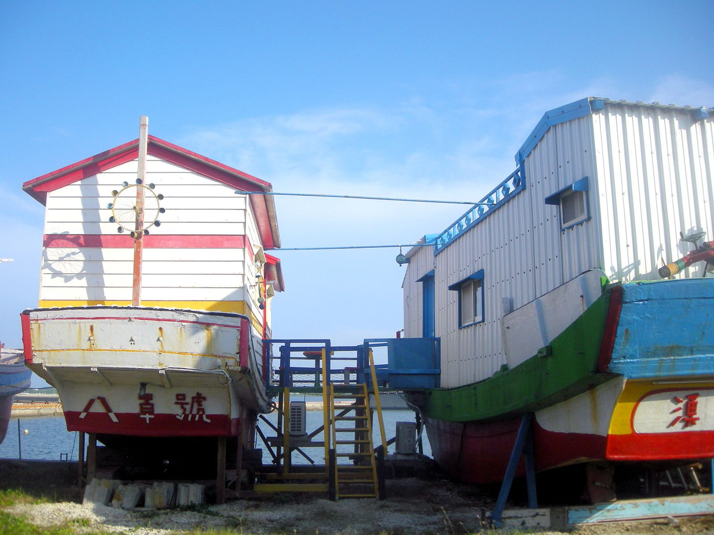
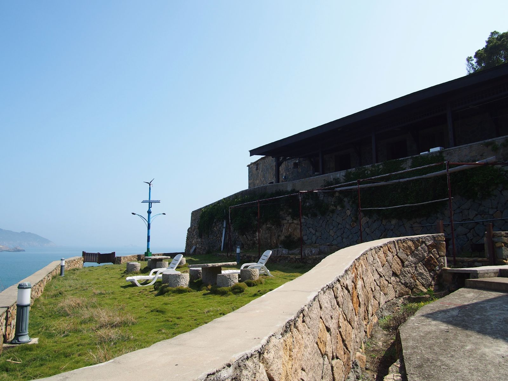

대만 민숙 등록번호, 예약 전에 어떻게 확인할까?
번호 하나만 맞춰 봐도 등록된 숙소인지 알 수 있어요.
게시
대만 민숙(民宿)은 지방정부에 등록하고 '민숙 등록증(民宿登記證)'과 전용 표지판을 받은 뒤에야 영업할 수 있어요. 예약 전에 숙소 광고에 적힌 등록번호(예: '花蓮縣民宿○○號')를 교통부 관광서 합법 숙소 조회(合法旅宿查詢)에서 이름·주소와 함께 맞춰 보면 돼요. 도착해서는 건물 밖 전용 표지판과 로비의 등록증을 한 번 더 보면 됩니다.
2024년 12월 개정된 민숙관리판법과 관광서 안내를 기준으로, 2026년 11월에 다시 확인한 내용만 정리했어요.
01 · 대만 민숙 등록번호, 무엇을 보면 될까 (2026년 11월 기준)
| 항목 | 내용 | 근거 |
|---|---|---|
| 영업 조건 | 지방정부에 등록하고 등록증과 전용 표지판을 받은 뒤 영업 | 민숙관리판법 제11조 |
| 등록증에 적힌 것 | 민숙 이름, 주소, 운영자 이름, 승인 날짜·문서번호, 등록증 번호 | 제14조 |
| 번호 형식 | '○○縣民宿○○號' 예: 花蓮縣民宿2369號(일반 호텔은 '○○市旅館○○號') | 관광서 합법 숙소 조회 목록 |
| 광고 표기 | 인터넷을 포함한 숙박 광고에 등록증 번호를 적어야 해요 | 제31조 제5호 |
| 현장 게시 | 등록증·객실 배치도는 로비, 전용 표지판은 건물 밖 잘 보이는 곳 | 제27조 |
민숙은 운영자가 직접 사는 자기 집을 이용해 가정 부업 형태로 운영하는 숙소로 정의돼 있어요. 그래서 규정상 건물 용도는 주택이어야 하고, 실제로 그 건물을 쓰는 개인이 한 곳만 운영할 수 있어요. 아파트 같은 집합주택(集合住宅)에는 원칙적으로 등록할 수 없고, 단지 안 건물 한 동 전체를 주민 동의를 받아 신청하는 경우만 예외예요.

02 · 예약 전에 합법 숙소인지 확인하는 순서
광고에서 등록번호 찾기 민숙은 숙박 광고에 등록증 번호를 적어야 해요. 예약 사이트 숙소 소개나 민숙 홈페이지·SNS에서 '民宿○○號' 같은 번호를 먼저 찾아보세요.
관광서 조회 페이지에서 맞춰 보기 교통부 관광서 여숙망의 합법 숙소 조회 목록에는 숙소 이름, 등록번호, 주소가 함께 나와요. 광고에 적힌 이름·번호·주소가 목록과 같은지 확인하세요.
번호가 안 보이면 물어보기 번호를 못 찾았다면 예약 전에 숙소에 등록번호를 직접 물어보고, 받은 번호를 같은 페이지에서 다시 확인하면 돼요.
도착해서 표지판·등록증 보기 등록된 민숙은 건물 밖 잘 보이는 곳에 전용 표지판을, 로비에 등록증과 객실 배치도를 걸어 둬야 해요. 객실에는 방값과 숙박 안내, 비상 대피도를 두게 되어 있어요.

03 · 알아두면 좋은 것
민숙과 호텔은 번호가 달라요 조회 목록에서 민숙은 '○○縣民宿○○號', 일반 호텔은 '○○市旅館○○號', 관광호텔은 '交觀宿字第○○號'처럼 번호 형식이 달라요. 숙소 종류를 같이 확인할 수 있어요.
실제 요금은 정해 둔 가격을 넘을 수 없어요 민숙관리판법은 민숙이 정해 둔 방값보다 실제로 더 받지 못하게 하고, 요금을 마음대로 올리거나 손님을 귀찮게 붙잡는 호객도 금지해요.
헷갈리면 관광서 상담 전화 교통부 관광서는 24시간 무료 여행 상담 전화 0800-011765를 안내하고 있어요(2026년 11월 기준).
04 · 자주 묻는 질문
대만 민숙 등록번호는 어떻게 생겼어요? '花蓮縣民宿2369號'처럼 현·시 이름 뒤에 '民宿'과 번호가 붙어요. 일반 호텔은 '旅館'으로 표기돼요.
합법 민숙인지 어디서 확인해요? 교통부 관광서 여숙망의 '합법 숙소 조회(合法旅宿查詢)' 페이지에서 숙소 이름·등록번호·주소를 맞춰 보면 돼요.
광고에 등록번호가 없으면요? 규정상 민숙 광고에는 등록증 번호를 적어야 해요. 없으면 예약 전에 숙소에 번호를 물어보고 조회 페이지에서 확인하세요.
아파트 한 호실을 빌려주는 숙소도 민숙인가요? 민숙은 원칙적으로 집합주택에 등록할 수 없어요. 단지 안 건물 한 동 전체를 주민 동의를 받아 신청한 경우만 예외예요.
도착해서는 무엇을 보면 돼요? 건물 밖 전용 표지판과 로비에 걸린 등록증·객실 배치도를 보면 돼요.
화롄에서 숙소 위치부터 고민 중이라면 화롄 숙소 위치, 역 앞·시내·칠성담 비교를 먼저 보세요. 계절마다 챙길 옷은 대만 여행 옷차림과 숙소 에어컨 대비에 정리해 두었어요. 숙소를 정했다면 화롄 맛집 지도와 화롄 조식 맛집에서 아침 먹을 곳을 고르면 되고, 지도에 있는 睿縈手工粉漿蛋餅專門店도 그중 한 곳이에요. 둘러볼 곳은 화롄 꼭 가볼 곳에 모아 두었습니다.
지도에서 화롄 맛집도 확인해보세요
민숙을 정했다면 근처 아침 먹을 곳을 지도에서 미리 찜해 두세요.